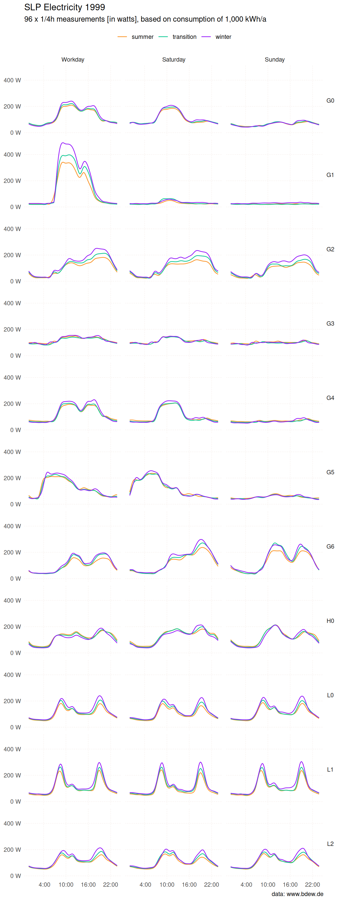
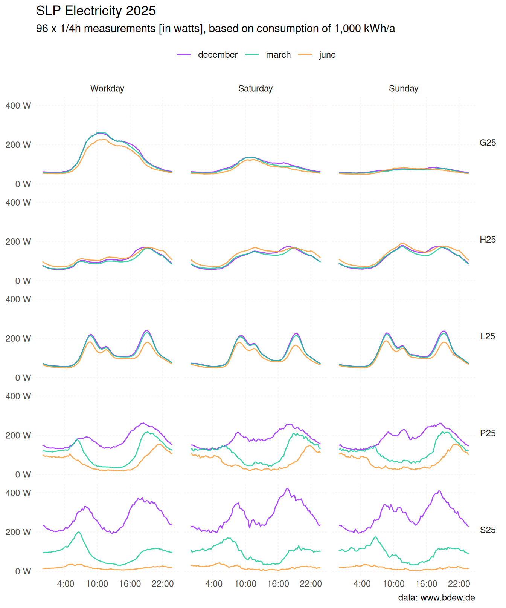

This package provides data on standard load profiles for electricity, published by the German Association of Energy and Water Industries (BDEW Bundesverband der Energie- und Wasserwirtschaft e.V.).

Installation
You can install standardlastprofile from CRAN with:
install.packages("standardlastprofile")To install the development version from GitHub use:
# install.packages("pak")
pak::pkg_install("flrd/standardlastprofile")Included Features
-
slp– A dataset containing BDEW standard load profiles for electricity. -
slp_generate()– Generate a standard load profile for a user-defined time period. -
slp_info()– Retrieve details of standard load profiles.
About the Data
The dataset slp contains 26,784 observations across 5 variables:
-
profile_id: identifier of a standard load profile -
period: one of"summer","winter","transition"for the 1999 profiles; a lowercase month name ("january"…"december") for the 2025 profiles -
day: one of"workday","saturday","sunday" -
timestamp: format"%H:%M" -
watts: electric power
library(standardlastprofile)
str(slp)
#> 'data.frame': 26784 obs. of 5 variables:
#> $ profile_id: chr "H0" "H0" "H0" "H0" ...
#> $ period : chr "winter" "winter" "winter" "winter" ...
#> $ day : chr "saturday" "saturday" "saturday" "saturday" ...
#> $ timestamp : chr "00:00" "00:15" "00:30" "00:45" ...
#> $ watts : num 70.8 68.2 65.9 63.3 59.5 55 50.5 46.6 43.9 42.3 ...In the context of the German electricity market, the term Standard Load Profile denotes a representative pattern of electricity consumption over a specific period. These profiles portray anticipated electricity consumption for diverse customer groups, like households or businesses. While not an exact match for an individual customer’s consumption profile, they serve as a valid approximation for larger groups of similar customers.
For each unique combination of profile_id, period and day there are 96 x 1/4 hour measurements in watts. The dataset covers two generations of profiles:
1999 profiles1 — based on an analysis of 1,209 load profiles of low-voltage electricity consumers in Germany:
-
H0: households (German: “Haushalte”) -
G0toG6: commerce (“Gewerbe”) -
L0toL2: agriculture (“Landwirtschaft”)
2025 profiles — an updated set published by BDEW reflecting changes in consumption patterns:
-
H25,G25,L25: updated household, commerce, and agriculture profiles -
P25: households with a photovoltaic (PV) system -
S25: households with a PV system and battery storage
For more details, call the slp_info() function.
slp_info(profile_id = "H0", language = "DE")
#> $H0
#> $H0$profile
#> [1] "H0"
#>
#> $H0$description
#> [1] "Haushalt"
#>
#> $H0$details
#> [1] "In dieses Profil werden alle Haushalte mit ausschließlichem und überwiegendem Privatverbrauch eingeordnet. Haushalte mit überwiegend privatem elektrischen Verbrauch, d.h. auch mit geringfügigem gewerblichen Bedarf sind z.B. Handelsvertreter, Heimarbeiter u.ä. mit Büro im Haushalt. Das Profil Haushalt ist nicht anwendbar bei Sonderanwendungen wie z.B. elektrischen Speicherheizungen oder Wärmepumpen."2025 Profiles
In 2025, BDEW published an updated set of standard load profiles reflecting changes in electricity consumption patterns since the original 1999 study. Five new profiles are included:
-
H25: households — updated version ofH0 -
G25: commerce (general) — updated version ofG0 -
L25: agriculture — updated version ofL0 -
P25: combination profile for households with a photovoltaic (PV) system -
S25: combination profile for households with a PV system and battery storage
Unlike the 1999 profiles, which group days into three seasonal periods (winter, summer, transition), the 2025 profiles provide a separate set of values for each calendar month. P25 and S25 are entirely new profile types with no 1999 equivalent, capturing the growing role of distributed generation and storage in residential electricity consumption.

The chart below places the 2025 household profiles side by side against H0 as a reference, showing how cumulative energy consumption diverges over the course of a year.

H25 tracks H0 almost exactly, confirming that the updated household profile represents a similar consumption pattern to its 1999 predecessor. P25 and S25, on the other hand, show a flattening of the cumulative curve from spring through summer: households with a photovoltaic system — and even more so those with additional battery storage — draw less energy from the grid during the months of high solar yield.
Generate a Standard Load Profile
To create a standard load profile for a specified time period, call the slp_generate() function:
G5 <- slp_generate(
profile_id = "G5",
start_date = "2023-12-22",
end_date = "2023-12-27"
)
head(G5)
#> profile_id start_time end_time watts
#> 1 G5 2023-12-22 00:00:00 2023-12-22 00:15:00 50.1
#> 2 G5 2023-12-22 00:15:00 2023-12-22 00:30:00 47.4
#> 3 G5 2023-12-22 00:30:00 2023-12-22 00:45:00 44.9
#> 4 G5 2023-12-22 00:45:00 2023-12-22 01:00:00 43.3
#> 5 G5 2023-12-22 01:00:00 2023-12-22 01:15:00 43.0
#> 6 G5 2023-12-22 01:15:00 2023-12-22 01:30:00 43.8
Public Holidays
By default, slp_generate() treats the nine public holidays observed nationwide in Germany as Sundays:
- New Year’s (Jan 1)
- Good Friday
- Easter Monday
- Labour Day (May 1)
- Ascension Day
- Whit Monday
- German Unity Day (Oct 3)
- Christmas Day (Dec 25)
- Boxing Day (Dec 26)
State-level holidays are not included because they vary by state and can change over time. Use the holidays argument to supply your own dates — the built-in data are then ignored entirely.
The example below fetches all 2027 public holidays for Germany and the state of Berlin from the nager.Date API, and passes them to slp_generate(). Berlin observes International Women’s Day (8 March) as an additional public holiday not shared by any other state.
library(httr2)
resp <- request("https://date.nager.at") |>
req_url_path_append("api", "v3", "PublicHolidays", "2027", "DE") |>
req_perform() |>
resp_body_json()
# global == TRUE → nationwide holiday (counties is NULL)
# global == FALSE → counties lists the states that observe it
is_berlin <- \(x) isTRUE(x$global) || "DE-BE" %in% unlist(x$counties)
holidays_berlin_2027 <- as.Date(
vapply(Filter(is_berlin, resp), \(x) x$date, character(1))
)
H0_berlin_2027 <- slp_generate(
"H0", "2027-01-01", "2027-12-31",
holidays = holidays_berlin_2027
)To generate a standard load profile including holidays for each of the 16 German states, repeat the same pattern in a loop — one API call suffices, re-filter per state:
states <- c(
"DE-BB", "DE-BE", "DE-BW", "DE-BY", "DE-HB", "DE-HE",
"DE-HH", "DE-MV", "DE-NI", "DE-NW", "DE-RP", "DE-SH",
"DE-SL", "DE-SN", "DE-ST", "DE-TH"
)
results <- vector("list", length(states))
names(results) <- states
for (state in states) {
is_state <- \(x) isTRUE(x$global) || state %in% unlist(x$counties)
holidays_state <- as.Date(
vapply(Filter(is_state, resp), \(x) x$date, character(1))
)
results[[state]] <- slp_generate(
profile_id = "H0",
start_date = "2027-01-01",
end_date = "2027-12-31",
holidays = holidays_state
)
}For more information, details about the data, and an explanation of the algorithm, see the vignette or run vignette("standardlastprofile", package = "standardlastprofile") locally.
Source
You can access the studies and data on standard load profiles for electricity on the website of the BDEW: https://www.bdew.de/energie/standardlastprofile-strom/
Code of Conduct
Please note that this project is released with a Contributor Code of Conduct. By participating in this project you agree to abide by its terms.